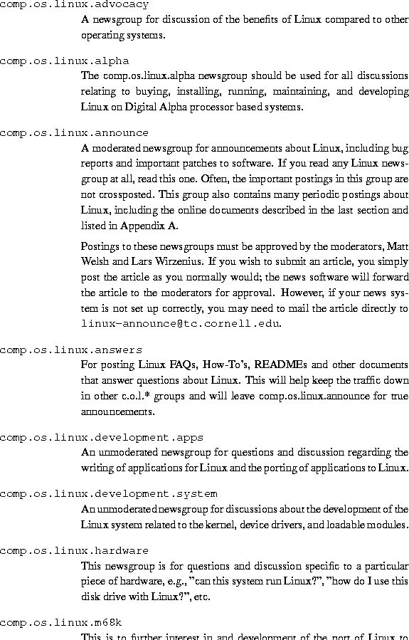

chap-introIntroduction to Linux Linux is quite possibly the most important free software achievement since the original Space War, or, more recently, Emacs. It has developed into an operating system for business, education, and personal productivity. Linux is no longer only for UNIX wizards who sit for hours in front of a glowing console (although we assure you that many users fall into this category). This book will help you get the most from Linux.
Linux (pronounced with a short i, as in LIH-nucks) is a UNIX operating system clone which runs on a variety of platforms, especially personal computers with Intel 80386 or better processors. It supports a wide range of software, from TeX, to the X Window System, to the GNU C/C++ compiler, to TCP/IP. It's a versatile, bona fide implementation of UNIX, freely distributed under the terms of the GNU General Public License (see Appendix C).
Linux can turn any 80386 or better personal computer into a workstation that puts the full power of UNIX at your fingertips. Businesses install Linux on entire networks of machines, and use the operating system to manage financial and hospital records, distributed computing environments, and telecommunications. Universities worldwide use Linux to teach courses on operating system programming and design. Computing enthusiasts everywhere use Linux at home for programming, productivity, and all-around hacking.
What makes Linux so different is that it is a free implementation of UNIX. It was and still is developed cooperatively by a group of volunteers, primarily on the Internet, who exchange code, report bugs, and fix problems in an open-ended environment. Anyone is welcome to join the Linux development effort. All it takes is interest in hacking a free UNIX clone, and some programming know-how. The book in your hands is your tour guide.
This book is an installation and entry-level guide to Linux. The purpose is to get new users up and running by consolidating as much important material as possible into one book. Instead of covering volatile technical details which tend to change with rapid development, we give you the straight background to find out more on your own.
Linux is not difficult to install and use. However, as with any implementation of UNIX, there is often black magic involved to get everything working correctly. We hope that this book will get you on the Linux tour bus and show you how great an operating system can be.
In this book, we cover the following topics:
This book is for the personal computer user who wishes to get started with Linux. We don't assume previous UNIX experience but do expect novices to refer to other material along the way. For those unfamiliar with UNIX, a list of useful references is given in Appendix A. In general, this book is meant to be read in addition to another book on basic UNIX concepts.
UNIX is one of the most popular operating systems worldwide because of its large support base and distribution. It was originally developed at AT&T as a multitasking system for minicomputers and mainframes in the 1970's, but has since grown to become one of the most widely-used operating systems anywhere, despite its sometimes confusing interface and lack of central standardization.
Many hackers feel that UNIX is the Right Thing--the One True Operating System. Hence, the development of Linux by an expanding group of UNIX hackers who want to get their hands dirty with their own system.
Versions of UNIX exist for many systems, from personal computers to supercomputers like the Cray Y-MP. Most versions of UNIX for personal computers are expensive and cumbersome. At the time of this writing, a one-machine version of UNIX System V for the 386 runs about US$1500.
Linux is a free version of UNIX developed primarily by Linus Torvalds at the University of Helsinki in Finland, with the help of many UNIX programmers and wizards across the Internet. Anyone with enough know-how and gumption can develop and change the system. The Linux kernel uses no code from AT&T or any other proprietary source, and much of the software available for Linux was developed by the GNU project of the Free Software Foundation in Cambridge, Massachusetts, U.S.A. However, programmers from all over the world have contributed to the growing pool of Linux software.
Linux was originally developed as a hobby project by Linus Torvalds. It was inspired by Minix, a small UNIX system developed by Andy Tanenbaum. The first discussions about Linux were on the Usenet newsgroup, comp.os.minix. These discussions were concerned mostly with the development of a small, academic UNIX system for Minix users who wanted more.
The very early development of Linux mostly dealt with the task-switching features of the 80386 protected-mode interface, all written in assembly code. Linus writes,
``After that it was plain sailing: hairy coding still, but I had some devices, and debugging was easier. I started using C at this stage, and it certainly speeds up development. This is also when I started to get serious about my megalomaniac ideas to make `a better Minix than Minix.' I was hoping I'd be able to recompile gcc under Linux someday...``Two months for basic setup, but then only slightly longer until I had a disk driver (seriously buggy, but it happened to work on my machine) and a small file system. That was about when I made 0.01 available (around late August of 1991): it wasn't pretty, it had no floppy driver, and it couldn't do much of anything. I don't think anybody ever compiled that version. But by then I was hooked, and didn't want to stop until I could chuck out Minix.''
No announcement was ever made for Linux version 0.01. The 0.01 sources weren't even executable. They contained only the bare rudiments of the kernel source and assumed that you had access to a Minix machine to compile and experiment with them.
On October 5, 1991, Linus announced the first ``official'' version of Linux, which was version 0.02. At that point, Linus was able to run bash (the GNU Bourne Again Shell) and gcc (the GNU C compiler), but not much else. Again, this was intended as a hacker's system. The primary focus was kernel development--user support, documentation, and distribution had not yet been addressed. Today, the Linux community still seems to treat these issues as secondary to ``real programming''--kernel development.
As Linus wrote in comp.os.minix,
``Do you pine for the nice days of Minix-1.1, when men were men and wrote their own device drivers? Are you without a nice project and just dying to cut your teeth on an OS you can try to modify for your needs? Are you finding it frustrating when everything works on Minix? No more all-nighters to get a nifty program working? Then this post might be just for you.``As I mentioned a month ago, I'm working on a free version of a Minix-look-alike for AT-386 computers. It has finally reached the stage where it's even usable (though may not be, depending on what you want), and I am willing to put out the sources for wider distribution. It is just version 0.02...but I've successfully run bash, gcc, gnu-make, gnu-sed, compress, etc. under it.''
After version 0.03, Linus bumped up the version number to 0.10, as more people started to work on the system. After several further revisions, Linus increased the version number to 0.95 in March, 1992, to reflect his expectation that the system was ready for an ``official'' release soon. (Generally, software is not assigned the version number 1.0 until it is theoretically complete or bug-free.). Almost a year and a half later, in late December of 1993, the Linux kernel was still at version 0.99.pl14--asymptotically approaching 1.0. At the time of this writing, the current stable kernel version is 2.0 patchlevel 33, and version 2.1 is under development.
Most of the major, free UNIX software packages have been ported to Linux, and commercial software is also available. More hardware is supported than in the original kernel versions. Many people have executed benchmarks on 80486 Linux systems and found them comparable with mid-range workstations from Sun Microsystems and Digital Equipment Corporation. Who would have ever guessed that this ``little'' UNIX clone would have grown up to take on the entire world of personal computing?
Linux supports features found in other implementations of UNIX, and many which aren't found elsewhere. In this section, we'll take a nickel tour of the features of the Linux kernel.
Linux is a complete multitasking, multiuser operating system, as are all other versions of UNIX. This means that many users can log into and run programs on the same machine simultaneously.
The Linux system is mostly compatible with several UNIX standards (inasmuch as UNIX has standards) at the source level, including IEEE POSIX.1, UNIX System V, and Berkely System Distribution UNIX. Linux was developed with source code portability in mind, and it's easy to find commonly used features that are shared by more than one platform. Much of the free UNIX software available on the Internet and elsewhere compiles under Linux ``right out of the box.'' In addition, all of the source code for the Linux system, including the kernel, device drivers, libraries, user programs, and development tools, is freely distributable.
Other specific internal features of Linux include POSIX job control (used by shells like csh and bash), pseudoterminals ( pty devices), and support for dynamically loadable national or customized keyboard drivers. Linux supports virtual consoles that let you switch between login sessions on the same system console. Users of the screen program will find the Linux virtual console implementation familiar.
The kernel can emulate 387-FPU instructions, and systems without a math coprocessor can run programs that require floating-point math capability.
Linux supports various file systems for storing data, like the ext2 file system, which was developed specifically for Linux. The Xenix and UNIX System V file systems are also supported, as well as the Microsoft MS-DOS and Windows 95 VFAT file systems on a hard drive or floppy. The ISO 9660 CD-ROM file system is also supported. We'll talk more about file systems in chapters 2 and 4.
Linux provides a complete implementation of TCP/IP networking
software. This includes device drivers for many popular Ethernet
cards, SLIP (Serial Line Internet Protocol) and PPP (Point-to-Point
Protocol), which provide access to a TCP/IP network via a serial
connection, PLIP (Parallel Line Internet Protocol), and NFS (Network
File System). The complete range of TCP/IP clients and services is
also supported, which includes FTP, telnet, NNTP, and
SMTP. We'll talk more about networking in Chapter  .
.
The Linux kernel is developed to use protected-mode features of Intel 80386 and better processors. In particular, Linux uses the protected-mode, descriptor based, memory-management paradigm, and other advanced features. Anyone familiar with 80386 protected-mode programming knows that this chip was designed for multitasking systems like UNIX. Linux exploits this functionality.
The kernel supports demand-paged, loaded executables. Only those segments of a program which are actually in use are read into memory from disk. Also, copy-on-write pages are shared among executables. If several instances of a program are running at once, they share physical memory, which reduces overall usage.
In order to increase the amount of available memory, Linux also
implements disk paging. Up to one gigabyte of swap
space may be allocated on disk (upt to 8 partitions of 128 megabytes
each). When the system requires more
physical memory, it swaps inactive pages to disk, letting you run
larger applications and support more users. However, swapping data to
disk is no substitute for physical RAM, which is much faster.
may be allocated on disk (upt to 8 partitions of 128 megabytes
each). When the system requires more
physical memory, it swaps inactive pages to disk, letting you run
larger applications and support more users. However, swapping data to
disk is no substitute for physical RAM, which is much faster.
The Linux kernel also implements a unified memory pool for user programs and disk cache. All free memory is used by the cache, which is reduced when running large programs.
Executables use dynamically linked, shared libraries: code from a single library on disk. This is not unlike the SunOS shared library mechanism. Executable files occupy less disk space, especially those which use many library functions. There are also statically linked libraries for object debugging and maintaining ``complete'' binary files when shared libraries are not installed. The libraries are dynamically linked at run time, and the programmer can use his or her own routines in place of the standard library routines.
To facilitate debugging, the kernel generates core dumps for post-mortem analysis. A core dump and an executable linked with debugging support allows a developer to determine what caused a program to crash.
Virtually every utility one would expect of a standard UNIX implementation has been ported to Linux, including basic commands like ls, awk, tr, sed, bc, and more. The familiar working environment of other UNIX systems is duplicated on Linux. All standard commands and utilities are included. (Novice UNIX or Linux users should see Chapter 3 for an introduction to basic UNIX commands.)
Many text editors are available, including vi, ex, pico, jove, and GNU emacs, and variants like Lucid emacs, which incorporates extensions of the X Window System, and joe. The text editor you're accustomed to using has more than likely been ported to Linux.
The choice of a text editor is an interesting one. Many UNIX users prefer ``simple'' editors like vi. (The original author wrote this book with vi.) But vi has many limitations due to its age, and modern editors like emacs have gained popularity. emacs supports a complete, Lisp based macro language and interpreter, powerful command syntax, and other extensions. There are emacs macro packages which let you read electronic mail and news, edit directory contents, and even engage in artificially intelligent psychotherapy sessions (indispensible for stressed-out Linux hackers).
Most of the basic Linux utilities are GNU software. GNU utilities support advanced features that are not found in the standard versions of BSD and UNIX System Vprograms. For example, the GNU vi clone, elvis, includes a structured macro language that differs from the original implementation. However, GNU utilities are intended to remain compatible with their BSD and System V counterparts. Many people consider the GNU versions to be superior to the originals.
A shell is a program which reads and executes commands from the user. In addition, many shells provide features like job control, managing several processes at once, input and output redirection, and a command language for writing shell scripts. A shell script is a program in the shell's command language and is analogous to a MS-DOS batch file.
Many types of shells are available for Linux. The most important difference between shells is the command language. For example, the C SHell (csh) uses a command language similar to the C programming language. The classic Bourne SHell sh uses another command language. The choice of a shell is often based on the command language it provides, and determines, to a large extent, the qualities of your working environment under Linux.
The GNU Bourne Again Shell (bash) is a variation of the Bourne Shell which includes many advanced features like job control, command history, command and filename completion, an emacs-like interface for editing command lines, and other powerful extensions to the standard Bourne Shell language. Another popular shell is tcsh, a version of the C Shell with advanced functionality similar to that found in bash. Other shells include zsh, a small Bourne-like shell; the Korn Shell (ksh); BSD's ash; and rc, the Plan 9 shell.
If you're the only person using the system and refer to use vi and bash exclusively as your editor and shell, there's no reason to install other editors or shells. This ``do it yourself'' attitude is prevalent among Linux hackers and users.
Almost every computer user needs a method of preparing documents. In the world of personal computers, word processing is the norm: editing and manipulating text in a ``What-You-See-Is-What-You-Get'' (WYSIWYG) environment and producing printed copies of the text, complete with graphics, tables, and ornamentation.
Commercial word processors from Corel, Applix, and Star Division are available in the UNIX world, but text processing, which is quite different conceptually, is more common. In text processing systems, text is entered in a page-description language, which describes how the text should be formatted. Rather than enter text within a special word processing environment, you can modify text with any editor, like vi or emacs. Once you finish entering the source text (in the typesetting language), a separate program converts the source to a format suitable for printing. This is somewhat analogous to programming in a language like C, and ``compiling'' the document into printable form.
Many text processing systems are available for Linux. One is groff, the GNU version of the classic troff text formatter originally developed by Bell Labs and still used on many UNIX systems worldwide. Another modern text processing system is TeX, developed by Donald Knuth of computer science fame. Dialects of TeX, like LaTeX, are also available.
Text processors like TeX and groff differ mostly in the syntax of their formatting languages. The choice of one formatting system over another is based upon what utilities are available to satisfy your needs, as well as personal taste.
Many people consider groff's formatting language to be a bit obscure and use find TeX more readable. However, groff produces ASCII output which can be viewed on a terminal more easily, while TeX is intended primarily for output to a printing device. Various add-on programs are required to produce ASCII output from TeX formatted documents, or convert TeX input to groff format.
Another program is texinfo, an extension to TeX which is used for software documentation developed by the Free Software Foundation. texinfo can produce printed output, or an online-browsable hypertext ``Info'' document from a single source file. Info files are the main format of documentation used in GNU software like emacs.
Text processors are used widely in the computing community for producing papers, theses, magazine articles, and books. (This book is produced using LaTeX.) The ability to process source language as a text file opens the door to many extensions of the text processor itself. Because a source document is not stored in an obscure format that only one word processor can read, programmers can write parsers and translators for the formatting language, and thus extend the system.
What does a formatting language look like? In general, a formatted source file consists mostly of the text itself, with control codes to produce effects like font and margin changes, and list formatting.
Consider the following text:
Mr. Torvalds:We are very upset with your current plans to implement post-hypnotic suggestions in the Linux terminal driver code. We feel this way for three reasons:
We hope you will reconsider.
- Planting subliminal messages in the terminal driver is not only immoral, it is a waste of time;
- It has been proven that ``post-hypnotic suggestions'' are ineffective when used upon unsuspecting UNIX hackers;
- We have already implemented high-voltage electric shocks, as a security measure, in the code for login.
This text might appear in the LaTeX formatting language as the following:
\begin{quote}
Mr. Torvalds:
We are very upset with your current plans to implement
{\em post-hypnotic suggestions\/} in the {\bf Linux} terminal
driver code. We feel this way for three reasons:
\begin{enumerate}
\item Planting subliminal messages in the kernel driver is not only
immoral, it is a waste of time;
\item It has been proven that ``post-hypnotic suggestions''
are ineffective when used upon unsuspecting UNIX hackers;
\item We have already implemented high-voltage electric shocks, as
a security measure, in the code for {\tt login}.
\end{enumerate}
We hope you will reconsider.
\end{quote}
The author enters the text using any text editor and generates formatted output by processing the source with LaTeX. At first glance, the typesetting language may appear to be obscure, but it's actually quite easy to understand. Using a text processing system enforces typographical standards when writing. All the enumerated lists within a document will look the same, unless the author modifies the definition of an enumerated list. The goal is to allow the author to concentrate on the text, not typesetting conventions.
When writing with a text editor, one generally does not think about how the printed text will appear. The writer learns to visualize the finished text's appearance from the formatting commands in the source.
WYSIWYG word processors are attractive for many reasons. They provide an easy-to-use visual interface for editing documents. But this interface is limited to aspects of text layout which are accessible to the user. For example, many word processors still provide a special format language for producing complicated expressions like mathematical formulae. This is text processing, albeit on a much smaller scale.
A not-so-subtle benefit of text processing is that you specify exactly which format you need. In many cases, the text processing system requires a format specification. Text processing systems also allow source text to be edited with any text editor, instead of relying on format codes which are hidden beneath a word processor's opaque user interface. Further, the source text is easily converted to other formats. The tradeoff for this flexibility and power is the lack of WYSIWYG formatting.
Some programs let you preview the formatted document on a graphics display device before printing. The xdvi program displays a ``device independent'' file generated by the TeX system under X. Applications like xfig and gimp provide WYSIWYG graphics interfaces for drawing figures and diagrams, which are subsequently converted to text processing language for inclusion in your document.
Text processors like troff were around long before WYSIWYG word processing was available. Many people still prefer their versatility and independence from a graphics environment.
Many text-processing-related utilities are available. The powerful METAFONT system, which is used to design fonts for TeX, is included in the Linux port of TeX. Other programs include ispell, an interactive spelling checker and corrector; makeindex, which generates indices in LaTeX documents; and many other groff and TeXbased macro packages which format many types of technical and mathematical texts. Conversion programs that translate between TeX or groff source to a myriad of other formats are also available.
A newcomer to text formatting is YODL, written by Karel Kubat. YODL is an easy-to-learn language with filters to produce various output formats, like LaTeX, SGML, and HTML.
Linux provides a complete UNIX programming environment which includes all of the standard libraries, programming tools, compilers, and debuggers which you would expect of other UNIX systems.
Standards like POSIX.1 are supported, which allows software written for Linux to be easily ported to other systems. Professional UNIX programmers and system administrators use Linux to develop software at home, then transfer the software to UNIX systems at work. This not only saves a great deal of time and money, but also lets you work in the comfort of your own home. (One of the authors uses his system to develop and test X Window System applications at home, which can be directly compiled on workstations elsewhere.) Computer Science students learn UNIX programming and explore other aspects of the system, like kernel architecture.
With Linux, you have access to the complete set of libraries and programming utilities and the complete kernel and library source code.
Within the UNIX software world, systems and applications are often programmed in C or C++. The standard C and C++ compiler for Linux is GNU gcc, which is an advanced, modern compiler that supports C++, including AT&T 3.0 features, as well as Objective-C, another object-oriented dialect of C.
Besides C and C++, other compiled and interpreted programming languages have been ported to Linux, like Smalltalk, FORTRAN, Java, Pascal, LISP, Scheme, and Ada (if you're masochistic enough to program in Ada, we aren't going to stop you). In addition, various assemblers for writing protected-mode 80386 code are available, as are UNIX hacking favorites like Perl (the script language to end all script languages) and Tcl/Tk (a shell-like command processing system which has support for developing simple X Window System applications).
The advanced gdb debugger can step through a program one line of source code at a time, or examine a core dump to find the cause of a crash. The gprof profiling utility provides performance statistics for your program, telling you where your program spends most of its execution time. As mentioned above, the emacs text editor provides interactive editing and compilation environments for various programming languages. Other tools include GNU make and imake, which manage compilation of large applications, and RCS, a system for source code locking and revision control.
Finally, Linux supports dynamically linked, shared libraries (DLLs), which result in much smaller binaries. The common subroutine code is linked at run-time. These DLLs let you override function definitions with your own code. For example, if you wish to write your own version of the malloc() library routine, the linker will use your new routine instead of the one in the libraries.
The X Window System, or simply X, is a standard graphical user interface (GUI) for UNIX machines and is a powerful environment which supports many applications. Using the X Window System, you can have multiple terminal windows on the screen at once, each having a different login session. A pointing device like a mouse is often used with X, although it isn't required.
Many X-specific applications have been written, including games, graphics and programming utilities, and documentation tools. Linux and X make your system a bona fide workstation. With TCP/IP networking, your Linux machine can display X applications running on other machines.
The X Window System was originally developed at the Massachusetts Institute of Technology and is freely distributable. Many commercial vendors have distributed proprietary enhancements to the original X Window System as well. The version of X for Linux is XFree86, a port of X11R6 which is freely distributable. XFree86 supports a wide range of video hardware, including VGA, Super VGA, and accelerated video adaptors. XFree86 is a complete distribution of the X Windows System software, and contains the X server itself, many applications and utilities, programming libraries, and documents.
Standard X applications include xterm, a terminal emulator used for most text-based applications within a window, xdm, which handles logins, xclock, a simple clock display, xman, a X-based manual page reader, and xmore. The many X applications available for Linux are too numerous to mention here, but their number includes spreadsheets, word processors, graphics programs, and web browsers like the Netscape Navigator. Many other applications are available separately. Theoretically, any application written for X should compile cleanly under Linux.
The interface of the X Window System is controlled largely by the window manager. This user-friendly program is in charge of the placement of windows, the user interface for resizing and moving them, changing windows to icons, and the appearance of window frames, among other tasks. XFree86 includes twm, the classic MIT window manager, and advanced window managers like the Open Look Virtual Window Manager (olvwm) are available. Popular among Linux users is fvwm--a small window manager that requires less than half the memory of twm. It provides a 3-dimensional appearance for windows and a virtual desktop. The user moves the mouse to the edge of the screen, and the desktop shifts as though the display were much larger than it really is. fvwm is greatly customizable and allows access to functions from the keyboard as well as mouse. Many Linux distributions use fvwm as the standard window manager. A version of fvwm called fvwm95-2 offers Microsoft Windows 95-like look and feel.
The XFree86 distribution includes programming libraries for wily programmers who wish to develop X applications. Widget sets like Athena, Open Look, and Xaw3D are supported. All of the standard fonts, bitmaps, manual pages, and documentation are included. PEX (a programming interface for 3-dimensional graphics) is also supported.
Many X application programmers use the proprietary Motif widget set for development. Several vendors sell single and multiple user licenses for binary versions of Motif. Because Motif itself is relatively expensive, not many Linux users own it. However, binaries statically linked with Motif routines can be freely distributed. If you write a program using Motif, you may provide a binary so users without the Motif libraries can use the program.
A major caveat to using the X Window System is its hardware requirements. A 80386-based CPU with 4 megabytes of RAM is capable of running X, but 16 megabytes or more of physical RAM is needed for comfortable use. A faster processor is nice to have as well, but having enough physical RAM is much more important. In addition, to achieve really slick video performance, we recommend getting an accelerated video card, like a VESA Local Bus (VLB) S3 chipset card. Performance ratings in excess of 300,000 xstones have been achieved with Linux and XFree86. Using adequate hardware, you'll find that running X and Linux is as fast, or faster, than running X on other UNIX workstations.
In Chapter we discuss how to install and use X on
your system.
Would you like to communicate with the world? Linux supports two primary UNIX networking protocols: TCP/IP and UUCP. TCP/IP (Transmission Control Protocol/Internet Protocol) is the networking paradigm which allows systems all over the world to communicate on a single network, the Internet. With Linux, TCP/IP, and a connection to the Internet, you can communicate with users and machines via electronic mail, Usenet news, and FTP file transfer.
Most TCP/IP networks use Ethernet as the physical network transport. Linux supports many popular Ethernet cards and interfaces for personal computers, including pocket and PCMCIA Ethernet adaptors.
However, because not everyone has an Ethernet connection at home, Linux also supports SLIP (Serial Line Internet Protocol) and PPP (Point-to-Point Protocol), which provide Internet access via modem. Many businesses and universities provide SLIP and PPP servers. In fact, if your Linux system has an Ethernet connection to the Internet and a modem, your system can become a SLIP or PPP server for other hosts.
NFS (Network File System) lets your system seamlessly share file systems with other machines on the network. FTP (File Transfer Protocol) lets you transfer files with other machines. sendmail sends and receives electronic mail via the SMTP protocol; C-News and INN are NNTP based new systems; and telnet, rlogin, and rsh let you log in and execute commands on other machines on the network. finger lets you get information about other Internet users.
Linux also supports Microsoft Windows connectivity via Samba, and
Macintosh connectivity with AppleTalk and LocalTalk. Support for
Novell's IPX protocol is also included.
The full range of mail and news readers is available for Linux, including elm, pine, rn, nn, and tin. Whatever your preference, you can configure a Linux system to send and receive electronic mail and news from all over the world.
The system provides a standard UNIX socket programming interface. Virtually any program that uses TCP/IP can be ported to Linux. The Linux X server also supports TCP/IP, and applications running on other systems may use the display of your local system.
In Chapter , we discuss the installation of
TCP/IP software, including SLIP and PPP.
UUCP (UNIX-to-UNIX Copy) is an older mechanism to transfer files,
electronic mail, and electronic news between UNIX
machines. Historically, UUCP machines are connected over telephone
lines via modem, but UUCP is able to transfer data over a TCP/IP
network as well. If you do not have access to a TCP/IP network or a
SLIP or PPP server, you can configure your system to send and receive
files and electronic mail using UUCP. See Chapter
for more information.
If you have a modem, you'll be able to communicate with other machines via telecommunications packages available for Linux. Many people use telecommunications software to access bulletin board systems (BBS's) as well as commercial, online services like Prodigy, CompuServe, and America Online. People use modems to connect to UNIX systems at work or school. Modems can send and receive faxes.
A popular communications package for Linux is seyon, which provides a customizable, ergonomic interface undex X and has built-in support for the Kermit and ZModem file transfer protocols. Other telecommunications programs include C-Kermit, pcomm, and minicom. These are similar to communications programs found on other operating systems, and are quite easy to use.
If you do not have access to a SLIP or PPP server (see the previous section), you can use term to multiplex your serial line. The term program allows you to open more than one login session over a modem connection. It lets you redirect X client connections to your local X server via a serial line. Another software package, KA9Q, implements a similar, SLIP-like interface.
Operating a Bulletin Board System (BBS) is a favorite hobby and means of income for many people. Linux supports a wide range of BBS software, most of which is more powerful than that available for other operating systems. With a phone line, modem, and Linux, you can turn your system into a BBS and provide dial-in access for users worldwide. BBS software for Linux includes XBBS and UniBoard BBS packages.
Most BBS software locks the user into a menu based system where only certain functions and applications are available. An alternative to BBS access is full UNIX access, which lets users dial into your system and log in normally. This requires a fair amount of maintenance by the system administrator, but providing public UNIX access is not difficult. In addition to TCP/IP networking, you can make electronic mail and news access available on your system.
If you do not have access to a TCP/IP network or UUCP feed, Linux lets
you communicate with BBS networks like FidoNet, which let you exchange
electronic news and mail over a telephone line. You can find more
information on telecommunications and BBS software under Linux in
Chapter .
It is worth noting that Linux includes web server software as well as web browsers. The most common server is Apache. Thousands of Linux systems run Apache on the Internet today, including the Linux Resources site, www.linuxresources.com.
Linux distributions include different web browsers, and other browsers can be downloaded from the Internet. Available browsers include Lynx, Mosaic, Netscape, Arena, and Amaya.
Linux provides complete support for Java and CGI applets, and Perl is a standard tool in the Linux programming environment.
Various utilities exist to interface with MS-DOS. The most well-known application is the Linux MS-DOS Emulator, which lets you run MS-DOS applications directly from Linux. Although Linux and MS-DOS are completely different operating systems, the 80386 protected-mode environment allows MS-DOS applications to behave as if they were running in their native 8086 environment.
The MS-DOS emulator is still under development, but many popular applications run under it. Understandably, MS-DOS applications that use bizarre or esoteric features of the system may never be supported, because of the limitations inherent in any emulator. For example, you shouldn't expect to run programs that use 80386 protected-mode features, like Microsoft Windows (in 386 enhanced mode, that is).
Standard MS-DOS commands and utilities like PKZIP.EXE work under the emulators, as do 4DOS, a COMMAND.COM replacement, FoxPro 2.0, Harvard Graphics, MathCad, Stacker 3.1, Turbo Assembler, Turbo C/C++, Turbo Pascal, Microsoft Windows 3.0 (in real mode), and WordPerfect 5.1.
The MS-DOS Emulator is meant mostly as an ad-hoc solution for those who need MS-DOS for only a few applications and use Linux for everything else. It's not meant to be a complete implementation of MS-DOS. Of course, if the Emulator doesn't satisfy your needs, you can always run MS-DOS as well as Linux on the same system. Using the LILO boot loader, you can specify at boot time which operating system to start. Linux can also coexist with other operating systems, like OS/2.
Linux provides a seamless interface to transfer files between Linux and MS-DOS. You can mount a MS-DOS partition or floppy under Linux, and directly access MS-DOS files as you would any file.
Currently under development is WINE--a Microsoft Windows emulator for the X Window System under Linux. Once WINE is complete, users will be able to run MS-Windows applications directly from Linux. This is similar to the commercial WABI Windows emulator from Sun Microsystems, which is also available for Linux.
In Chapter , we talk about the MS-DOS tools
available for Linux.
A host of miscellaneous programs and utilities exist for Linux, as one would expect of such a hodgepodge operating system. Linux's primary focus is UNIX personal computing, but this is not the only field where it excels. The selection of business and scientific software is expanding, and commercial software vendors have begun to contribute to the growing pool Linux applications.
Several relational databases are available for Linux, including Postgres, Ingres, and Mbase. These are full-featured, professional, client/server database applications, similar to those found on other UNIX platforms. Many commercial database systems are available as well.
Scientific computing applications include FELT (finite element analysis); gnuplot (data plotting and analysis); Octave (a symbolic mathematics package similar to MATLAB); xspread (a spreadsheet calculator); xfractint (an X-based port of the popular Fractint fractal generator); and xlispstat (statistics). Other applications include SPICE (circuit design and analysis) and Khoros (image and digital signal processing and visualization). Commercial packages like Maple and MathLab are available.
Many more applications have been ported to Linux. If you absolutely cannot find what you need, you can attempt to port the application from another platform to Linux yourself. Whatever your field, porting standard UNIX applications to Linux is straightforward. Linux's complete UNIX programming environment is sufficient to serve as the base for any scientific application.
Linux also has its share of games. These include classic text based dungeon games like Nethack and Moria; MUDs (multi-user dungeons, which allow many users to interact in a text-based adventure) like DikuMUD and TinyMUD; and a slew of X games like xtetris, netrek, and xboard, the X11 version of gnuchess. The popular shoot-em-up, arcade-style game, Doom, has also been ported to Linux.
For audiophiles, Linux supports various sound cards and related software, like CDplayer, which makes a CD-ROM drive into an audio CD player, MIDI sequencers and editors, which let you compose music for playback through a synthesizer or other MIDI controlled instrument, and sound editors for digitized sounds.
Can't find the application you're looking for? The Linux Software Map, described in Appendix A, lists software packages which have been written or ported to Linux. Another way to find Linux applications is to look at the INDEX files found on Linux FTP sites, if you have Internet access.
Most freely-distributable, UNIX based software will compile on Linux with little difficulty. If all else fails, you can write the application yourself. If you're looking for a commercial application, there may be a free ``clone'' available. Or, you can encourage the software company to consider releasing a binary version for Linux. Several individuals have contacted software companies and asked them to port their applications to Linux, with various degrees of success.
Linux is covered by what is known as the GNU General Public
License, or GPL. The GPL was developed for the GNU project by
the Free Software Foundation and specifies several provisions for the
distribution and modification of free software. Free, in this
sense, refers to distribution, not cost. The GPL has always been
subject to misinterpretation. We hope that this summary will help you
understand the extent and goals of the GPL and its effect on Linux. A
complete copy of the GPL is printed in Appendix C.
Originally, Linus Torvalds released Linux under a license more
restrictive than the GPL, which allowed the software to be freely
distributed and modified, but prevented any money from changing hands
for its distribution and use. On the other hand, the GPL allows people
to sell and profit from free software, but does not allow them to
restrict another's right to distribute the software in any way.
First, it should be explained that free software that is covered by
the GPL is not in the public domain. Public domain software by
definition is not copyrighted and is literally owned by the
public. Software covered by the GPL, on the other hand, is copyrighted
by the author. The software is protected by standard international
copyright laws, and the author is legally defined. The GPL provides
for software which may be freely distributed but is not in the public
domain.
GPL-licensed software is also not shareware. Generally, shareware is
owned and copyrighted by an author who requires users to send in money
for its use. Software covered by the GPL may be distributed and used
free of charge.
The GPL also lets people take, modify, and distribute their own
versions of the software. However, any derived works of GPL software
must also be covered by the GPL. In other words, a company may not
take Linux, modify it, and sell it under a restrictive license. If the
software is derived from Linux, that software must be covered under
the GPL also.
The GPL allows free software to be distributed and used free of
charge. It also lets a person or organization distribute GPL software
for a fee, and even make a profit from its sale and
distribution. However, a distributor of GPL software cannot take those
rights away from a purchaser. If you purchase GPL software from a
third-party source, you may distribute the software for free, and sell
it yourself as well.
This may sound like a contradiction. Why sell software when the GPL
allows you to get it for free? Let's say that a company decided to
bundle a large amount of free software on a CD-ROM and distribute
it. That company would need to charge for the overhead of producing
and distributing the CD-ROM, and may even decide to profit from the
sales of the software. This is allowed by the GPL.
Organizations that sell free software must follow certain restrictions
set forth in the GPL. They cannot restrict the rights of users who
purchase the software. If you buy a CD-ROM that contains GPL software,
you can copy and distribute the CD-ROM free of charge, or resell it
yourself. Distributors must make obvious to users that the software
is covered by the GPL. Distributors must also provide, free of charge,
the complete source code to the software distributed. This permits
anyone who purchases GPL software to make modifications to that
software.
Allowing a company to distribute and sell free software is a good
thing. Not everyone has access to the Internet and the ability to
download software for free. Many organizations sell Linux on
diskette, tape, or CD-ROM via mail order, and profit from the
sales. Linux developers may never see any of this profit; that is the
understanding reached between the developer and the distributor when
software is licensed by the GPL. In other words, Linus Torvalds knew
that companies may wish to sell Linux, and that he might not see a
penny of the profits.
In the free software world, the important issue is not money. The
goal of free software is always to develop and distribute fantastic
software and allow anyone to obtain and use it. In the next section,
we'll discuss how this applies to the development of Linux.
New users often have a few misconceptions and false expectations about
Linux. It is important to understand the philosophy and design of
Linux in order to use it effectively. We'll start by describing how
Linux is not designed.
In commercial UNIX development houses, the entire system is developed
under a rigorous quality assurance policy that utilizes source and
revision control systems, documentation, and procedures to report and
resolve bugs. Developers may not add features or change key sections
of code on a whim. They must validate the change as a response to a
bug report and subsequently ``check in'' all changes to the source
control system, so that the changes may be reversed if necessary. Each
developer is assigned one or more parts of the system code, and only
that developer can alter those sections of the code while it is
``checked out'' (that is, while the code is under his or her control).
Organizationally, a quality assurance department runs rigorous tests
on each new version of the operating system and reports any bugs.
The developers fix these bugs as reported. A complex system of
statistical analysis is used to ensure that a certain percentage of
bugs are fixed before the next release, and that the operating system
as a whole passes certain release criteria.
The software company, quite reasonably, must have quantitative proof
that the next revision of the operating system is ready to be shipped;
hence, the gathering and analysis of statistics about the performance
of the operating system. It is a big job to develop a commercial UNIX
system, often large enough to employ hundreds, if not thousands, of
programmers, testers, documenters, and administrative personnel. Of
course, no two commercial UNIX vendors are alike, but that is the
general picture.
The Linux model of software development discards the entire concept of
organized development, source code control systems, structured bug
reporting, and statistical quality control. Linux is, and likely
always will be, a hacker's operating system. (By hacker, I mean
a feverishly dedicated programmer who enjoys exploiting computers and
does interesting things with them. This is the original definition of
the term, in contrast to the connotation of hacker as a computer
wrongdoer, or outlaw.)
There is no single organization responsible for developing
Linux. Anyone with enough know-how has the opportunity to help develop
and debug the kernel, port new software, write documentation, and help
new users. For the most part, the Linux community communicates via
mailing lists and Usenet newsgroups. Several conventions have sprung
up around the development effort. Anyone who wishes to have their
code included in the ``official'' kernel, mails it to Linus Torvalds.
He will test and include the code in the kernel as long as it doesn't
break things or go against the overall design of the system.
The system itself is designed using an open-ended, feature-minded
approach. The number of new features and critical changes to the
system has recently diminished, and the general rule is that a new
version of the kernel will be released every few weeks. Of course,
this is a rough figure. New release criteria include the number of
bugs to be fixed, feedback from users testing pre-release versions of
the code, and the amount of sleep Linus Torvalds has had this week.
Suffice it to say that not every bug is fixed, nor is every problem
ironed out between releases. As long as the revision appears to be
free of critical or recurring bugs, it is considered to be stable, and
the new version is released. The thrust behind Linux development is
not to release perfect, bug-free code: it is to develop a free UNIX
implementation. Linux is for the developers, more than anyone
else.
Anyone who has a new feature or software application generally makes
it available in an alpha version--that is, a test version, for
those brave users who want to hash out problems in the initial
code. Because the Linux community is largely based on the Internet,
alpha software is usually uploaded to one or more Linux FTP sites (see
Appendix B), and a message is posted to one of the
Linux Usenet newsgroups about how to obtain and test the code. Users
who download and test alpha software can then mail results, bug fixes,
and questions to the author.
After the initial bugs have been fixed, the code enters a beta
test stage, in which it is usually considered stable but not
complete. It works, but not all of the features may be present. The
software may also go directly to a final stage, in which the software
is considered complete and usable.
Keep in mind that these are only conventions--not rules. Some
developers may feel so confident of their software that they decide it
isn't necessary to release alpha or test versions. It is always up to
the developer to make these decisions.
You might be amazed at how such an unstructured system of volunteers
who program and debug a complete UNIX system gets anything done at
all. As it turns out, this is one of the most efficient and motivated
development efforts ever employed. The entire Linux kernel is written
from scratch, without code from proprietary sources. It takes a
huge amount of work to port all the free software under the sun to
Linux. Libraries are written and ported, file systems are developed,
and hardware drivers are written for many popular devices--all due to
the work of volunteers.
Linux software is generally released as a distribution, a set of
prepackaged software which comprises an entire system. It would be
difficult for most users to build a complete system from the ground
up, starting with the kernel, adding utilities, and installing all of
the necessary software by hand. Instead, many software distributions
are available which include everything necessary to install and run a
complete system. There is no single, standard distribution--there are
many, and each has its own advantages and disadvantages. We describe
installation of the various Linux distributions starting on
page
It is important to understand the differences between Linux and other
operating systems, like MS-DOS, OS/2, and the other implementations of
UNIX for personal computers. First of all, Linux coexists happily with
other operating systems on the same machine: you can run MS-DOS and
OS/2 along with Linux on the same system without problems. There are
even ways to interact between various operating systems, as we'll see.
Why use Linux, instead of a well known, well tested, and
well documented commercial operating system? We could give you a
thousand reasons. One of the most important, however, is that Linux is
an excellent choice for personal UNIX computing. If you're a UNIX
software developer, why use MS-DOS at home? Linux allows you to
develop and test UNIX software on your PC, including database and
X Window System applications. If you're a student, chances are that
your university computing systems run UNIX. You can run your own UNIX
system and tailor it to your needs. Installing and running Linux is
also an excellent way to learn UNIX if you don't have access to other
UNIX machines.
But let's not lose sight. Linux isn't only for personal UNIX users. It
is robust and complete enough to handle large tasks, as well as
distributed computing needs. Many businesses--especially small
ones--have moved their systems to Linux in lieu of other UNIX based,
workstation environments. Universities have found that Linux is
perfect for teaching courses in operating systems design. Large,
commercial software vendors have started to realize the opportunities
which a free operating system can provide.
It's not uncommon to run both Linux and MS-DOS on the same system.
Many Linux users rely on MS-DOS for applications like word processing.
Linux provides its own analogs for these applications, but you might
have a good reason to run MS-DOS as well as Linux. If your
dissertation is written using WordPerfect for MS-DOS, you may not be
able to convert it easily to TeX or some other format. Many
commercial applications for MS-DOS aren't available for Linux yet, but
there's no reason that you can't use both.
MS-DOS does not fully utilize the functionality of 80386 and 80486
processors. On the other hand, Linux runs completely in the
processor's protected mode, and utilizes all of its features. You can
directly access all of your available memory (and beyond, with virtual
RAM). Linux provides a complete UNIX interface which is not available
under MS-DOS. You can easily develop and port UNIX applications to
Linux, but under MS-DOS you are limited to a subset of UNIX
functionality.
Linux and MS-DOS are different entities. MS-DOS is inexpensive
compared to other commercial operating systems and has a strong
foothold in the personal computer world. No other operating system
for the personal computer has reached the level of popularity of
MS-DOS, because justifying spending $1,000 for other operating
systems alone is unrealistic for many users. Linux, however, is free,
and you may finally have the chance to decide for yourself.
You can judge Linux vs. MS-DOS based on your expectations and
needs. Linux is not for everybody. If you always wanted to run a
complete UNIX system at home, without the high cost of other UNIX
implementations for personal computers, Linux may be what you're
looking for.
A number of other advanced operating systems have become popular in
the PC world. Specifically, IBM's OS/2 and Microsoft Windows have
become popular for users upgrading from MS-DOS.
Both OS/2 and Windows NT are full featured multitasking operating
systems, like Linux. OS/2, Windows NT, and Linux support roughly the
same user interface, networking, and security features. However, the
real difference between Linux and The Other Guys is the fact that
Linux is a version of UNIX, and benefits from contributions of the
UNIX community at large.
What makes UNIX so important? Not only is it the most popular
operating system for multiuser machines, it is a foundation of the
free software world. Much of the free software available on the
Internet is written specifically for UNIX systems.
There are many implementations of UNIX from many vendors. No single
organization is responsible for its distribution. There is a large
push in the UNIX community for standardization in the form of open
systems, but no single group controls this design. Any vendor (or, as
it turns out, any hacker) may develop a standard implementation of
UNIX.
OS/2 and Microsoft operating systems, on the other hand, are
proprietary. The interface and design are controlled by a single
corporation, which develops the operating system code. In one sense,
this kind of organization is beneficial because it sets strict
standards for programming and user interface design, unlike those
found even in the open systems community.
Several organizations have attempted the difficult task of
standardizing the UNIX programming interface. Linux, in particular, is
mostly compliant with the POSIX.1 standard. As time goes by, it is
expected that the Linux system will adhere to other standards, but
standardization is not the primary goal of Linux development.
Several other implementations of UNIX exist for 80386 or better
personal computers. The 80386 architecture lends itself to UNIX, and
vendors have taken advantage of this.
Oher implementations of UNIX for the personal computer are similar to
Linux. Almost all commercial versions of UNIX support roughly the
same software, programming environment, and networking features.
However, there are differences between Linux and commercial versions
of UNIX.
Linux supports a different range of hardware than commercial
implementations. In general, Linux supports most well-known hardware
devices, but support is still limited to hardware which the developers
own. Commercial UNIX vendors tend to support more hardware at the
outset, but the list of hardware devices which Linux supports is
expanding continuously. We'll cover the hardware requirements for
Linux in Section 1.8.
Many users report that Linux is at least as stable as commercial UNIX
systems. Linux is still under development, but the two-pronged
release philosophy has made stable versions available without impeding
development.
The most important factor for many users is price. Linux software is
free if you can download it from the Internet or another computer
network. If you do not have Internet access, you can still purchase
Linux inexpensively via mail order on diskette, tape, or CD-ROM.
Of course, you may copy Linux from a friend who already has the
software, or share the purchase cost with someone else. If you plan to
install Linux on a large number of machines, you need only purchase a
single copy of the software--Linux is not distributed with a ``single
machine'' license.
The value of commercial UNIX implementations should not be demeaned.
In addition to the price of the software itself, one often pays for
documentation, support, and quality assurance. These are very
important factors for large institutions, but personal computer users
may not require these benefits. In any case, many businesses and
universities have found that running Linux in a lab of inexpensive
personal computers is preferable to running a commercial version of
UNIX in a lab of workstations. Linux can provide workstation
functionality on a personal computer at a fraction of the cost.
Linux systems have travelled the high seas of the North Pacific, and
manage telecommunications and data analysis for an oceanographic
research vessel. Linux systems are used at research stations in
Antarctica. Several hospitals maintain patient records on Linux
systems.
Other free or inexpensive implementations of UNIX are available for
the 80386 and 80486. One of the best known is 386BSD, an
implementation of BSD UNIX for the 80386. The 386BSD package is
comparable to Linux in many ways, but which one is better depends on
your needs and expectations. The only strong distinction we can make
is that Linux is developed openly, and any volunteer can aid in the
development process, while 386BSD is developed by a closed team of
programmers. Because of this, serious philosophical and design
differences exist between the two projects. The goal of Linux is to
develop a complete UNIX system from scratch (and have a lot of fun in
the process), and the goal of 386BSD is in part to modify the existing
BSD code for use on the 80386.
NetBSD is another port of the BSD NET/2 distribution to several
machines, including the 80386. NetBSD has a slightly more open
development structure, and is comparable to 386BSD in many respects.
Another project of note is HURD, an effort by the Free Software
Foundation to develop and distribute a free version of UNIX for many
platforms. Contact the Free Software Foundation (the address is given in
Appendix C) for more information about this project.
At the time of this writing, HURD is still under development.
Other inexpensive versions of UNIX exist as well, like Minix, an
academic but useful UNIX clone upon which early development of Linux
was based. Some of these implementations are mostly of academic
interest, while others are full fledged systems.
You must be convinced by now of how wonderful Linux is, and of all the
great things it can do for you. However, before you rush out and
install Linux, you need to be aware of its hardware requirements and
limitations.
Keep in mind that Linux is developed by users. This means, for the
most part, that the hardware supported by Linux is that which the
users and developers have access to. As it turns out, most popular
hardware and peripherals for personal computers are supported. Linux
supports more hardware than some commercial implementations of
UNIX. However, some obscure devices aren't supported yet.
Another drawback of hardware support under Linux is that many
companies keep their hardware interfaces proprietary. Volunteer Linux
developers can't write drivers for the devices because the
manufacturer does not make the technical specifications public. Even
if Linux developers could develop drivers for proprietary devices,
they would be owned by the company which owns the device interface,
which violates the GPL. Manufacturers that maintain proprietary
interfaces write their own drivers for operating systems like MS-DOS
and Microsoft Windows. Users and third-party developers never need to
know the details of the interface.
In some cases, Linux programmers have attempted to write hackish
device drivers based on assumptions about the interface. In other
cases, developers work with the manufacturer and try to obtain
information about the device interface, with varying degrees of
success.
In the following sections, we attempt to summarize the hardware
requirements for Linux. The Linux Hardware HOWTO (see
Section 1.9) contains a more complete listing of
hardware supported by Linux.
Disclaimer: Much hardware support for Linux is in the
development stage. Some distributions may or may not support
experimental features. This section lists hardware which has been
supported for some time and is known to be stable. When in doubt,
consult the documentation of your Linux distribution. See
Section 2.2 for more information about Linux
distributions.
Linux is available for many platforms in addition to Intel 80x86
systems. These include Macintosh, Amiga, Sun SparcStation, and
Digital Equipment Corporation Alpha based systems. In this book,
however, we focus on garden-variety Intel 80386, 80486, and Pentium
processors, and clones by manufacturers like AMD, Cyrix, and IBM.
Linux currently supports systems with the Intel 80386, 80486, or
Pentium CPU, including all variations like the 80386SX, 80486SX,
80486DX, and 80486DX2. Non-Intel clones work with Linux as well. Linux
has also been ported to the DEC Alpha and the Apple PowerMac.
If you have an 80386 or 80486SX, you may also wish to use a math
coprocessor, although one isn't required. The Linux kernel can
perform FPU emulation if the machine doesn't have a coprocessor. All
standard FPU couplings are supported, including IIT, Cyrix FasMath,
and Intel.
Most common PC motherboards are based on the PCI bus but also offer
ISA slots. This configuration is supported by Linux, as are EISA and
VESA-bus systems. IBM's MicroChannel (MCA) bus, found on most IBM PS/2
systems, is significantly different, and support has been recently
added.
Linux requires very little memory, compared to other advanced
operating systems. You should have 4 megabytes of RAM at the very
least, and 16 megabytes is strongly recommended. The more memory you
have, the faster the system will run. Some distributions require more
RAM for installation.
Linux supports the full 32-bit address range of the processor. In
other words, it uses all of your RAM automatically.
Linux will run with only 4 megabytes of RAM, including bells and
whistles like the X Window System and emacs. However, having
more memory is almost as important as having a faster processor. For
general use, 16 megabytes is enough, and 32 megabytes, or more, may be
needed for systems with a heavy user load.
Most Linux users allocate a portion of their hard drive as swap space,
which is used as virtual RAM. Even if your machine has more than
16 megabytes of physical RAM, you may wish to use swap space. It is
no replacement for physical RAM, but it can let your system run larger
applications by swapping inactive portions of code to disk. The
amount of swap space that you should allocate depends on several
factors; we'll come back to this question in
Chapter 2.
It is possible to run Linux from a floppy diskette, or, for some
distributions, a live file system on CD-ROM, but for good performance
you need hard disk space. Linux can co-exist with other operating
systems--it only needs one or more disk partitions.
Linux supports all IDE and EIDE controllers as well as older MFM and
RLL controllers. Most, but not all, ESDI controllers are supported.
The general rule for non-SCSI hard drive and floppy controllers is
that if you can access the drive from MS-DOS or another operating
system, you should be able to access it from Linux.
Linux also supports a number of popular SCSI drive controllers. This
includes most Adaptec and Buslogic cards as well as cards based on the
NCR chip sets.
Of course, to install Linux, you need to have some amount of free
space on your hard drive. Linux will support more than one hard drive
on the same machine; you can allocate space for Linux across multiple
drives if necessary.
How much hard drive space depends on your needs and the software
you're installing. Linux is relatively small, as UNIX implementations
go. You could run a system in 20 megabytes of disk space. However,
for expansion and larger packages like X, you need more space. If you
plan to let more than one person use the machine, you need to allocate
storage for their files. Realistic space requirements range from 200
megabytes to one gigabyte or more.
Also, you will likely want to allocate disk space as virtual RAM. We
will discuss installing and using swap space in
Chapter 2.
Each Linux distribution comes with literature to help you gauge the
precise amount of storage required for your software configuration.
Look at the information which comes with your distribution or the
appropriate installation section in Chapter 2.
Linux supports standard Hercules, CGA, EGA, VGA, IBM monochrome, Super
VGA, and many accelerated video cards, and monitors for the default,
text-based interface. In general, if the video card and monitor work
under an operating system like MS-DOS, the combination should work
fine under Linux. However, original IBM CGA cards suffer from ``snow''
under Linux, which is not pleasant to view.
Graphical environments like X have video hardware requirements of
their own. Rather than list them here, we relegate that discussion to
Section 5.1. Popular video cards are supported
and new card support is added regularly.
You may also have devices like a CD-ROM drive, mouse, or sound card,
and may be interested in whether or not this hardware is supported by
Linux.
Typically, a mouse is used only in graphical environments like
X. However, several Linux applications that are not associated with a
graphical environment also use mice.
Linux supports standard serial mice like Logitech, MM series,
Mouseman, Microsoft (2-button), and Mouse Systems (3-button). Linux
also supports Microsoft, Logitech, and ATIXL bus mice, and the PS/2
mouse interface.
Pointing devices that emulate mice, like trackballs and touchpads,
should work also.
Many common CD-ROM drives attach to standard IDE controllers. Another
common interface for CD-ROM is SCSI. SCSI support includes multiple
logical units per device so you can use CD-ROM ``jukeboxes.''
Additionally, a few proprietary interfaces, like the NEC CDR-74, Sony
CDU-541 and CDU-31a, Texel DM-3024, and Mitsumi are supported.
Linux supports the standard ISO 9660 file system for CD-ROMs, and the
High Sierra file system extensions.
Any SCSI tape drive, including quarter inch, DAT, and 8MM are
supported, if the SCSI controller is supported. Devices that connect
to the floppy controller like floppy tape drives are supported as
well, as are some other interfaces, like QIC-02.
Linux supports the complete range of parallel printers. If MS-DOS or
some other operating system can access your printer from the parallel
port, Linux should be able to access it, too. Linux printer software
includes the UNIX standard lp and lpr software. This
software allows you to print remotely via a network, if you have one.
Linux also includes software that allows most printers to handle
PostScript files.
As with printer support, Linux supports the full range of serial
modems, both internal and external. A great deal of telecommunications
software is available for Linux, including Kermit, pcomm,
minicom, and seyon. If your modem is accessible from another
operating system on the same machine, you should be able to access it
from Linux with no difficulty.
Many popular Ethernet cards and LAN adaptors are supported by Linux.
Linux also supports some FDDI, frame relay, and token ring cards, and
all Arcnet cards. A list of supported network cards is included in
the kernel source of your distribution.
Many other sources of information about Linux are available. In
particular, a number of books about UNIX in general will be of use,
especially for readers unfamiliar with UNIX. We suggest that you
peruse one of these books before attempting to brave the jungles of
Linux.
Information is also available online in electronic form. You must have
access to an online network like the Internet, Usenet, or Fidonet to
access the information. A good place to start is
www.linuxresources.com (see Appendix A).
If you do not, you might be able to find
someone who is kind enough to give you hard copies of the documents.
Many Linux documents are available via anonymous FTP from Internet
archive sites around the world and networks like Fidonet and
CompuServe. Linux CD-ROM distributions also contain the documents
mentioned here. If you are can send mail to Internet sites, you may be
able to retrieve these files using one of the FTP e-mail servers that
mail you the documents or files from the FTP sites. See
Appendix B for more information on using FTP
e-mail servers.
A list of well-known Linux archive sites is given in
Appendix B. To reduce network traffic, you should
use a FTP site that is geographically close to you.
Appendix A contains a partial list of the Linux
documents available via anonymous FTP. The filenames vary depending on
the site. Most sites keep Linux-related documents in the docs
subdirectory of their Linux archive. For example, the FTP site
sunsite.unc.edu, keeps Linux files in /pub/Linux, with
Linux-related documentation in /pub/Linux/docs.
Examples of available online documents are Linux Frequently Asked
Questions with Answers, a collection of frequently asked questions
about Linux; Linux HOWTO documents, which describe specific aspects of
the system, like the Installation HOWTO, Printing HOWTO, and Ethernet
HOWTO; and the Linux META-FAQ, which is a list of information
sources on the Internet.
Many of these documents are also regularly posted to one or more
Linux-related Usenet newsgroups; see Section 1.9.4
below.
The Linux Documentation Project Home Page is on the World Wide
Web at
http://sunsite.unc.edu/LDP
This web page lists many HOWTOs and other documents in HTML format, as
well as pointers to other sites of interest to Linux users, like
ssc.com, home of the Linux Journal, a monthly magazine. You
can find their home page at
http://www.ssc.com/.
The books of the Linux Documentation Project are the result of an
effort carried out over the Internet to write and distribute a bona
fide set of manuals for Linux, analogs of the documentation which
comes with commercial UNIX versions and covers installation,
operation, programming, networking, and kernel development.
Linux Documentation Project manuals are available via anonymous FTP
and by mail order. Appendix A lists the manuals
available and describes how to obtain them.
Many large publishers, including MIS:Press, Digital Press, O'Reilly &
Associates, and SAMS have jumped onto the Linux bandwagon. Check with
computer bookstores or SSC's web page at
http://www.ssc.com/, or the book reviews in Linux Journal,
sometimes made available on their site,
http://www.linuxjournal.com
A large number of books about UNIX in general are applicable to
Linux. In its use and programming interface, Linux does not differ
greatly from other implementations of UNIX. Almost everything you
would like to know about using and programming Linux can be found in
general UNIX texts. In fact, this book is meant to supplement the
library of UNIX books currently available. Here, we present the most
important Linux-specific details and hope that you will look to other
sources for in-depth information.
Armed with good books about UNIX as well as this book, you should be
able to tackle just about anything. Appendix A
lists several UNIX books which are recommended highly for UNIX
newcomers and wizards.
The Linux Journal magazine is distributed worldwide, and is an
excellent way to keep in touch with the goings-on of the Linux
community, especially if you do not have access to Usenet news (see
below). See Appendix A for information on
subscribing to the Linux Journal.
Usenet is a worldwide electronic news and discussion forum with
a diverse selection of newsgroups, which are discussion areas
devoted to specific topics. Much discussion about Linux development
occurrs over the Internet and Usenet. Not surprisingly, a number of
Usenet newsgroups are dedicated to Linux.
The original Linux newsgroup, alt.os.linux, was created to move
some of the discussion about Linux from comp.os.minix and
various mailing lists. Soon, the traffic on alt.os.linux grew
large enough that a newsgroup in the comp hierarchy was
warranted. A vote was taken in February, 1992, and
comp.os.linux was created.
comp.os.linux quickly became one of the most popular (and
loudest) of the Usenet groups, more popular than any other group in
the comp.os hierarchy. In December, 1992, a vote was taken to
split the newsgroup to reduce traffic; only
comp.os.linux.announce passed this vote. In July, 1993, the group
was finally split into a new hierarchy. Almost 2,000 people voted in
the comp.os.linux reorganization, making it one of the largest
Usenet Calls For Votes ever.
If you do not have Usenet, there are mail-to-news gateways available
for many (if not all) of the newsgroups below.
This list is by no means complete. New groups are created when a need
for a subdivision of discussion is advisable, and there are linux
groups in other hierarchies as well.
If you have access to Internet electronic mail, you can participate in
several mailing lists, even if you do not have Usenet access. If you
are not directly on the Internet, you can join one of these mailing
lists if you can exchange electronic mail with the Internet (for
example, through UUCP, Fidonet, CompuServe, or other networks which
exchange Internet mail).
For more information about the Linux mailing lists,
send e-mail to
Include a line with the word help in the body of the message,
and a message will be returned to you which describes how to subscribe
and unsubscribe to various mailing lists. The word lists on a
line by itself will retrieve the names of mailing lists which are
accessible through the majordomo.vger.rutgers.edu server.
There are several special-purpose mailing lists for Linux as well.
The best way to find out about these is to watch the Linux Usenet
newsgroups for announcements, as well as to read the list of
publicly-available mailing lists, which is posted to the Usenet
news.answers group.
You will undoubtedly need assistance during your adventures in the
Linux world. Even UNIX wizards are occasionally stumped by some quirk
or feature of Linux. It's important to know how, where, and when to
find help.
The primary means of obtaining help is through Internet mailing lists
and newsgroups as discussed in Section 1.9. If you
don't have access to these sources, you may be able to find comparable
Linux discussion forums on online services, like BBS's and CompuServe.
Also available online are Linux Journal's Best of Technical
Support columns, at http://www.linuxjournal.com/techsup.html.
Several businesses provide commercial support for Linux. These
services allow you to pay a subscription fee that lets you call
consultants for help with your Linux problems.
Keeping the following suggestions in mind will greatly improve your
experience with Linux and guarantee more success in finding help.
Consult all available documentation...first! You should do
this when you first encounter a problem. Various sources of
information are listed in Section 1.9 and
Appendix A. These documents are laboriously
written for people who need help with the Linux system, like you. As
mentioned above, books written for UNIX are applicable to Linux, and
you should use them, too.
If you have access to Usenet news, or any of the Linux-related mailing
lists, be sure to read the information there before posting. Often,
solutions to common problems that are not easy to find in the
documentation are well-covered in newsgroups and mailing lists. If you
only post to these groups but don't read them, you are asking for
trouble.
Learn to appreciate self-reliance. You asked for it by running
Linux in the first place. Remember, Linux is all about hacking and
fixing problems. It is not a commercial operating system, nor does it
try to be one. Hacking won't kill you. In fact, it will be
enlightening to investigate and solve problems yourself--you may even
one day call yourself a Linux guru. Learn to appreciate the full value
of hacking the system and fixing problems yourself. You shouldn't
expect to run a complete, homebrew Linux system without some
handiwork.
Remain calm. Nothing is earned by taking an axe--or worse, a
powerful electromagnet--to your Linux box. A large punching bag or a
long walk is a good way to relieve occasional stress attacks. As Linux
matures and distributions become more reliable, we hope this problem
will disappear. However, even commercial UNIX implementations can be
tricky. When all else fails, sit back, take a few deep breaths, and
return to the problem when you feel relaxed. Your mind and conscience
will be clearer.
Refrain from posting spuriously. Many people make the mistake
of posting or mailing messages pleading for help prematurely. When
encountering a problem, do not rush immediately to the nearest
terminal and post a message to one of the Linux Usenet groups. First
try to resolve the problem yourself, and be absolutely certain what
the problem is. Does your system not respond when switched on? Perhaps
it is unplugged.
When you post for help, make it worthwhile. Remember that
people who read your post are not necessarily there to help you.
Therefore, it is important to remain as polite, terse, and informative
as possible.
How does one accomplish this? First, you should include as much
relevant information about your system and your problem as
possible. Posting the simple request, ``I cannot seem to get e-mail to
work'' will probably get you nowhere unless you include information
about your system, what software you're using, what you have attempted
to do so far, and what the results were. When you include technical
information, it is also a good idea to include general information
about the version of your software (the Linux kernel version, for
example), as well as a brief summary of your hardware configuration.
But don't overdo it--your monitor type and brand is probably
irrelevant if you're trying to configure network software.
1.6 The design and philosophy of Linux.
.
1.7 Differences between Linux and other operating systems.
Why use Linux?
Linux vs. MS-DOS.
Linux vs. The Other Guys.
Linux vs. other implementations of UNIX.
1.8 Hardware requirements.
Motherboard and CPU requirements.
Memory requirements.
Hard drive controller requirements.
Hard drive space requirements.
Monitor and video adaptor requirements.
Miscellaneous hardware.
Mice and other pointing devices.
CD-ROM drives.
Tape drives.
Printers.
Modems.
Ethernet cards.
1.9 Sources of Linux information.
1.9.1 Online documents.
1.9.2 Linux on the World Wide Web.
1.9.3 Books and other published works.
1.9.4 Usenet newsgroups.

1.9.5 Internet mailing lists.
majordomo@vger.rutgers.edu
1.10 Getting Help with Linux.


Next: 2 Obtaining and Installing
Up: Linux Installation and Getting
Previous: Preface
Wed Mar 4 10:46:42 PST 1998